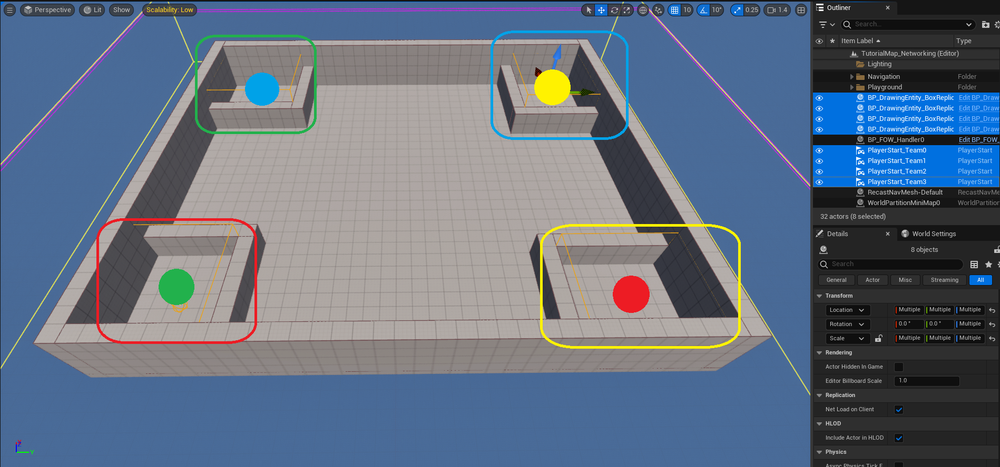
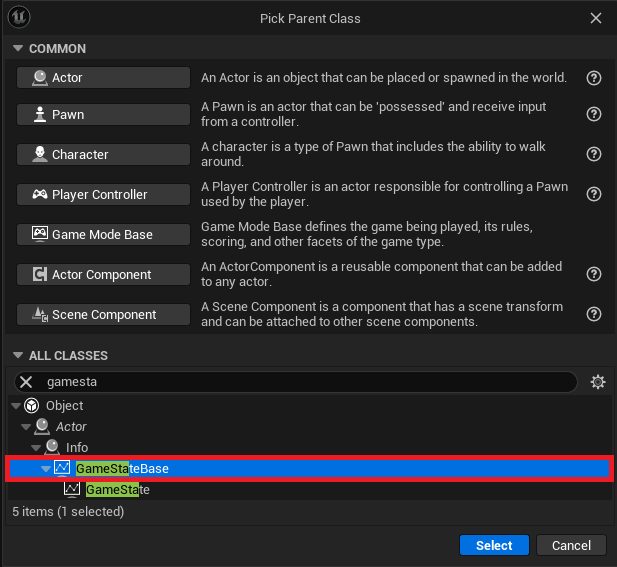
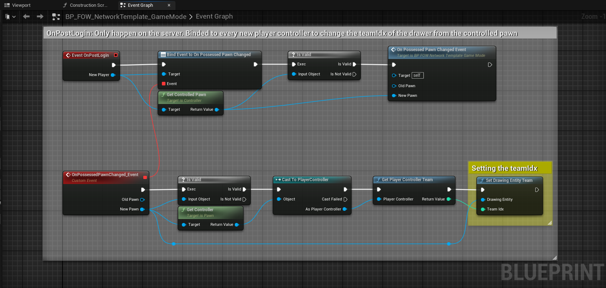
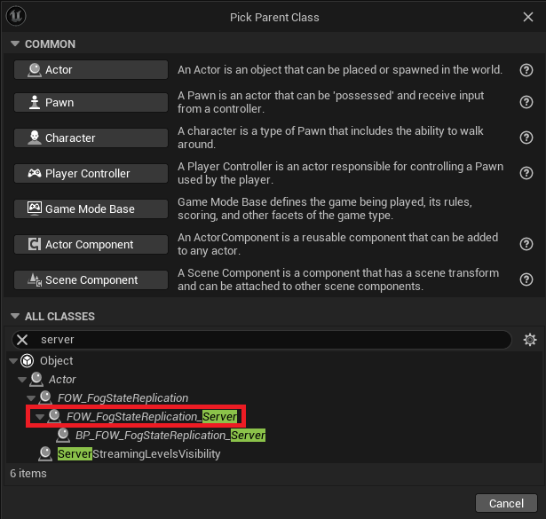
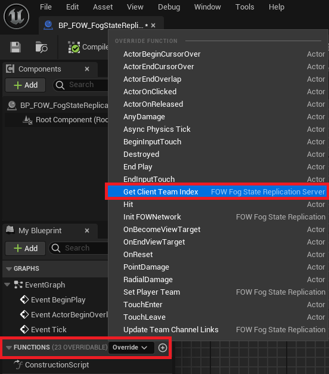
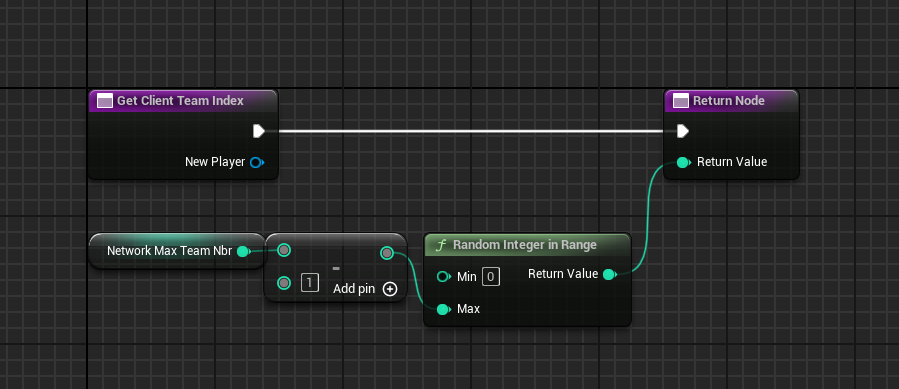
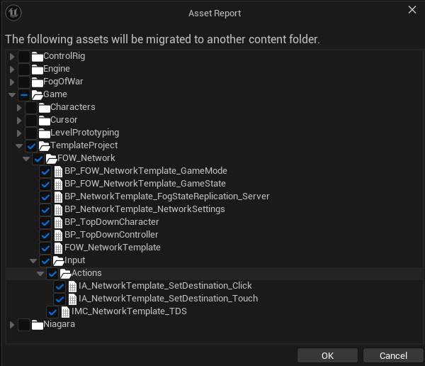
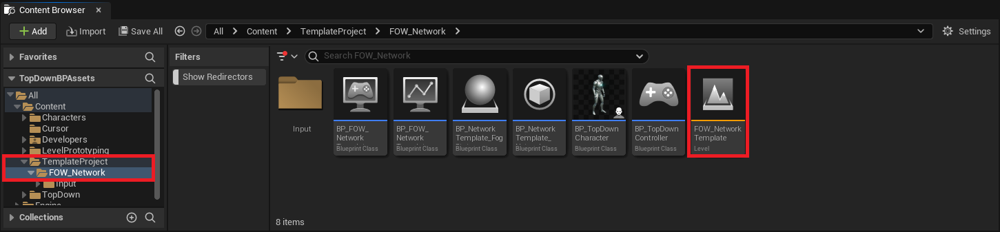
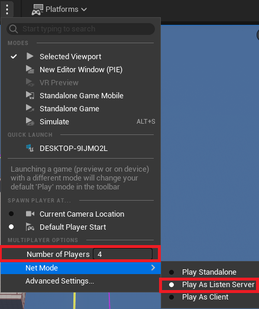

Networking
/!\ This tutorial is made to show how the FOW works with networks, replication knowledge won't be provided. Networking
GameMode,GameState,Controller, andCharacterare provided. You have absolutely the right to read, copy, and use any code you find :)
/!\ Please take a look at the Netork Architecture to understand correctly how the LFOW has been replicated
This tutorial has been realized in the Tutorial/Maps/TutorialMap_Networking map provided in the Demo Project
Default Replication Setup
The TutorialMap_Networking has been set up to show you how replication and teams work. To do so a
BP_TutorialNetworking_GameMode has been set up with a BP_TutorialNetworking_PlayerController to spawn a
BP_TutorialNetworking_Character at a PlayerStart location depending on the Client team.
To visualize the replication, the server will clear the fog of another spawn point for each team before the
client connection.
- The circle represents the spawn point
- The square is the associated revealed spawn point

There is a little trouble with Unreal and singleton instance when they are stored in a static variable. If you
hit the play button with multiple players in the editor, multiple worlds will be created but inside the same
application, which means static variables are shared and overridden. To prevent this, the FOW is designed to look
for an implementation of FOW_GetHandlerInstance_Interface in the GameState.
GameState
Let's set up the game state. Create a new My_FOWNetworking_GameState derived from GameStateBase

Open it and go into ClassSettings to add the FOW_GetHandlerInstance_Interface in the ImplementedInterfaces array.

Now you have to provide the code to the Find_Level_FOWHandler.
- Add a
FOW_Handlervariable - Get the variable and convert it to a
Validateget, if valid return the variable. - Else find all actors of class
FOW_Handler - If at least one is returned, set your
FOW_Handlervariable to the first element of the array - Call the
TryInitilizationfrom theFOW_Handler - Return the variable

Now open the BP_TutoralNetworking_GameMode and replace the GameState with yours

Note that if you don't simulate the network in the editor, this whole setting isn't needed. As long as every game instance is a separate process, you don't need to implement the interface.
Network Settings
Now let's see how the FOW works with replication. First, create a new BP_MyNetworkSettings derived from UFOW_NetworkSettings.

Open it and change the NetworkGameMaxTeamNbr value from the Server to 4. It means that the FOW_Handler will
be ready to handle 4 different teams drawing fog separately. (For a few reasons, 4 teams with two channels enabled
is the maximum). Also, if you pay attention, the client is set to only one team, which means that only the client
team fog will be updated.
Under those settings, you will find checkboxes to allow or not replication and which channels are replicated. The
first channel isn't needed since it represents the fog of what drawers currently see.

Select the BP_FOW_Handler, get into the details panel, and change the NetworkSettingsClass to your BP_MyNetworkSettings.

Before hitting the play button change the PlaySettings. Change the number of players to 4 and change NetMode to PlayAsListenServer.

Now you can hit the play button and see the 4 windows open with your character connecting one by one. If you do not
understand what the fog replication changes, go back to your BP_MyNetworkSettings and uncheck bIsFogStateReplicated.

GameMode
The provided GameMode already contains some logic, which may be a bit complicated for a simple setup.
Here you will find a lighter version to manage the player character team. In your custom project, open the GameMode.
- In the
Event Graph, implement theOnPostLoginevent and bind a custom event to theOnPossessedPawnChangedevent. - Check if the
ControlledPawnfrom theNewPlayeris valid. If it is, call the function you've just bound with theControlledPawnas theNew Pawnparameter. - In the bound event, check if the
New Pawnis valid. - If it's valid, get the
Controllerfrom it and cast it toPlayerController. - Call
GetPlayerControllerTeam. - Plug the result into
SetDrawingEntityTeam. You will also need to plug in theDrawing Entity, which will be theNewPawn.

Note: You will find the exact same code in the
Content/TemplateProject/FOW_Network/BP_FOW_NetworkTemplate_GameMode
Manage Player Team
The previous part was about setting up the network over the FOW. However, you couldn't do anything regarding which client is associated with which team because of the default system distributing the players to each team.
Let's see how to do that. Create a BP_MyFogStateReplication_Server derived from AFOW_FogStateReplication_Server.

Open it and override the GetClientTeamIndex function.

Open it. This is where you can manage the client team association. the PlayerController is provided, You should
be able to fetch necessary data from your game with it. For the example let's just do this:
- Get the
NetworkMaxTeamNbrand subtract 1 from it - Pin the result to a
Random Integer in Range - Pin the result to the return;

Now that the server is set up, open your BP_MyNetworkSettings and replace the FogStateReplicationClass by your BP_MyFogStateReplication_Server.

Hit the Play button and see the players being associated with a random team!
Infinite Team
In case you want more than 4 teams with two channels, you can just uncheck bIsFogStateReplicated, Set the
NetworkGameMaxTeamNbr for both client and server to 1 and provide any team index you want in the GetClientTeamIndex override.
This replicated team number issue will be taken care of; it might not allow an infinite number but more than 4 for sure

Network Template
To simplify the creation process of online games, I've created a lightweight template for you to migrate to your current project under UE5.4.
You will find the template folder in the content folder provided in the Demo Project
First, ensure that the Layered Fog of War plugin is correctly installed and enabled.

Get to the TemplateProject folder In the Demo Project, right click on the FOW_Network folder and select Migrate.

A window will open and will let you select what you want to migrate. Be really cautious to select only what's under the TemplateProject

Unreal will then ask you the content folder of your New Project.

Once done, you will be able to open the FOW_NetworkTemplate map in your New Project.

Verify that your editor is correctly setup for network.

Hit the play button and enjoy :)

Documentation built with Unreal-Doc v1.0.9 tool by PsichiX